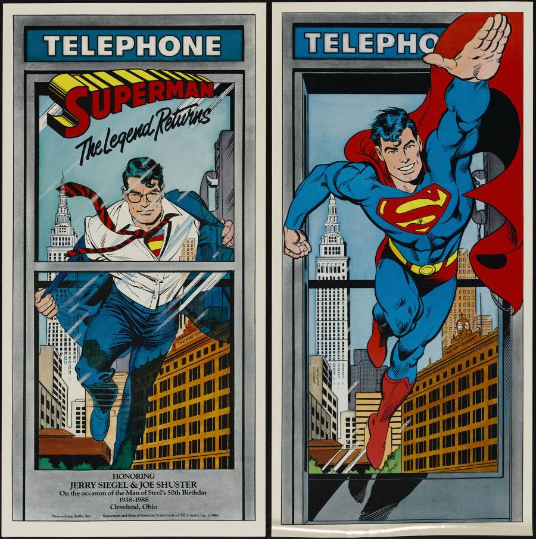

You don't need a cape,
you don't need a phone booth,

and you don't need spidey sense
to be a superhero
Space
Forward
Right, Down, Page Down
Next slide
Left, Up, Page Up
Previous slide
G
Go to slide number
P
Open presenter console
H
Toggle this help